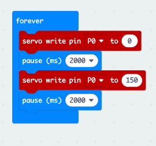
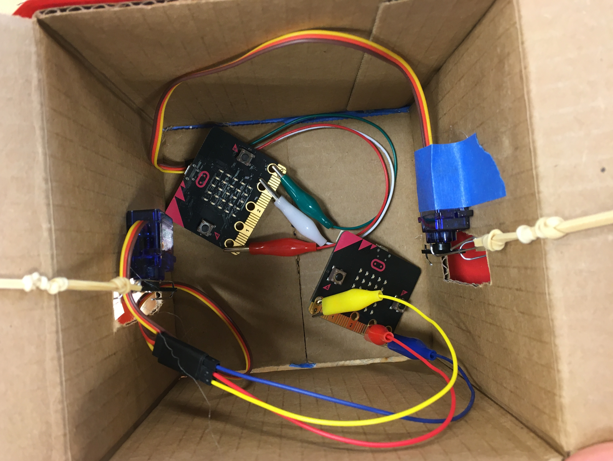
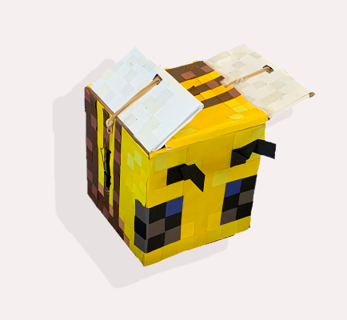

Link to Microbit Code
Clea Joy Ramos - E&D I - April 2021
In this project, we creatively explored the functions of a Microbit to create an interactive animal.
My partner Lucas Pombo and I began this project by first coding the Microbit and attaching it to the motor. We coded the Microbit using coding blocks on Microsoft MakeCode. Initially, we coded for the motor arm to move 180 degrees. After uploading our code to the Microbit, we tested the motion of the motor and temporarily attached the motor and the arm to one of the flaps of our assembled cardboard box. After seeing the motion of the cardboard flap, I came up with the idea of making a bee. The flapping motion could be used as the bee's wings. We embraced the boxy shape of the cardboard by making a Minecraft bee.
Once we chose our animal inspiration, we tackled the configuration of the motors within the box in order to create a flapping motion. Lucas had the idea of using a two-sided arm attached to the motor. He placed the motor inside the box and cut a hole for one side of the motor's arm to rotate outside of the box. Then, he used paper clips and rubber bands to extend the motor arm's motion to the inside and the outside cardboard flap. One side of the motor arm was connected to the inner flap, while the other side of the motor arm poked out of the side hole and connected to the outer face of the flap. So, when the motor rotated the arm about 180 degrees, one arm and rubberband would be pulled while the other rubber band would be slack, therefore causing the cardboard flap to move inwards or outwards. We replicated the motor and wing position on the other side of the be by adding another Microbit, motor, and battery pack.
After testing and confirming the motion of our bee, I decorated it with shades of yellow and brown construction paper squares to mimic the pixelated pattern of the Minecraft bees. I also added white and clear square panels for the wings and added features to the face with construction paper.
|  | |
 |
| Microbit Code Link to Microbit Code |
Inspiration for bee | Inside of our cardboard bee |
|---|
One difficulty we encountered was perfecting the motion of the wings. We tested many different methods and formations of the motor and motor arm to get the full motion of a flapping bee wing. We first started off with a one armed motor, but then switched to a double armed motor so that we could attach paper clips to either end resulting in two opposing motions: up and down. This way we were able to achieve the up and down flapping motion of a wing. Furthermore, we had trouble finding the right amount of tension and slack to apply to the rubber bands in order to get a tight enough band to pull the wing down, but a loose enough configuration to let the wing be pulled back up. We solved this issue by using the same rubber bands for all of the wings and we added tension by tying knots in the band to shorten its length.
Another difficulty we encountered was learning how to use the Microbit. After uploading our code onto the Microbit, we tried testing our motor, but we did not see any movement. We then noticed that our code had some difficulties uploading to the Microbit, but after a few tries of rue-loading, our Microbit eventually worked. However, we noticed that the arm of the motor was rotating more than the 180 degrees that we had instructed it to do in our code. First, we altered the motor's motion by adjusting the tightness of the screw that attached the arm to the motor. Afterwards, we adjusted our code to turn to 150 degrees instead of 180 degrees so that the arm would not over rotate. Overall, we were able to conquer many of our difficulties through trial and error to see what methods worked best.
|  | |
| Asymmetric view of Vee | Video of Bee |
|---|